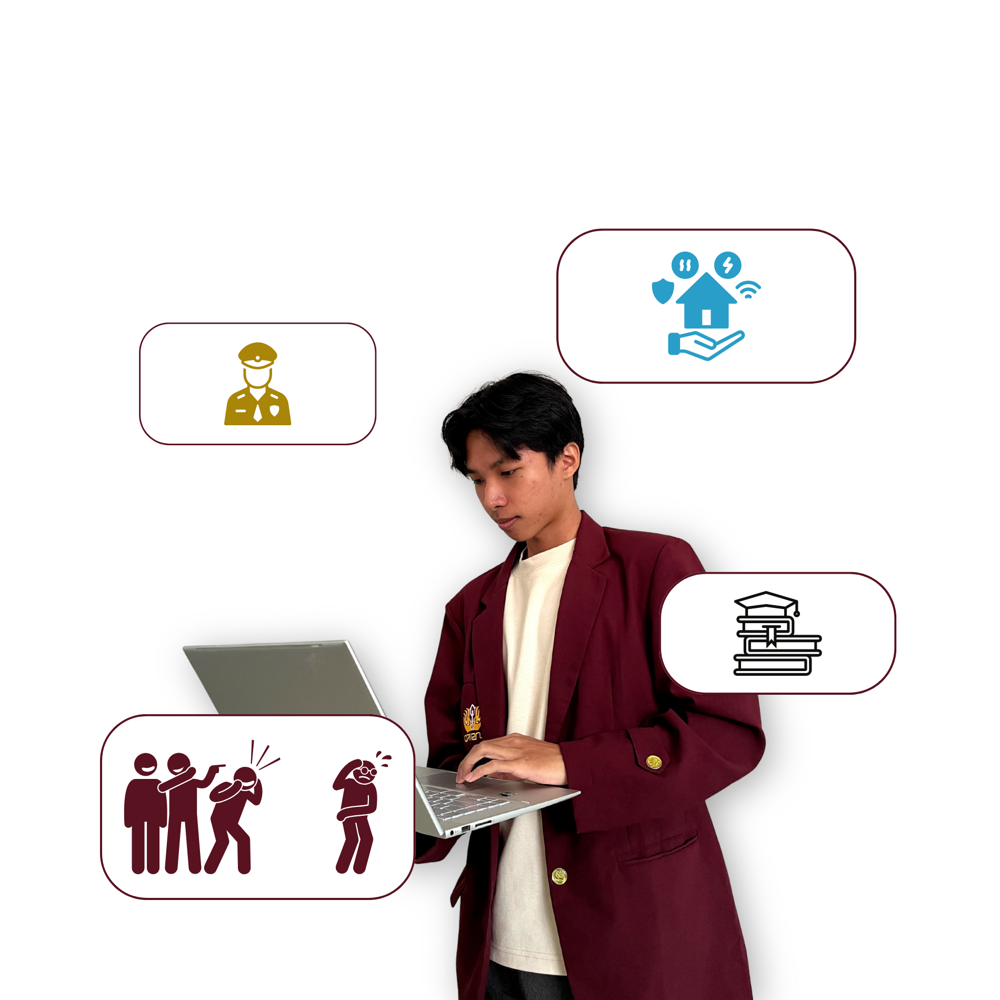
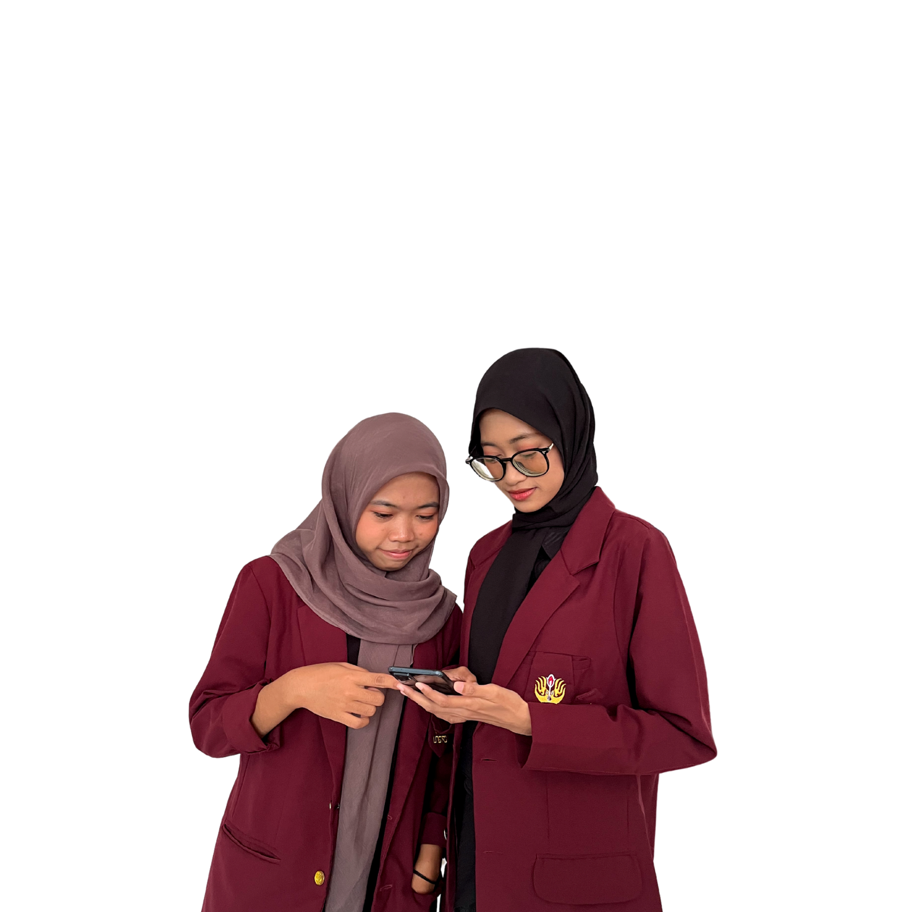

Sampaikan aspirasi, keluhan, atau masukan Anda dengan mudah. Kami siap membantu menciptakan lingkungan kampus yang lebih baik dan nyaman untuk semua.


TellSIKA adalah platform pengaduan resmi yang dirancang khusus untuk mahasiswa, staf, dan seluruh civitas akademika. Kami hadir sebagai jembatan antara mahasiswa dan pihak kampus untuk memastikan setiap suara didengar dan setiap masalah mendapat perhatian yang layak.
Menciptakan lingkungan kampus yang lebih baik melalui komunikasi terbuka, transparansi, dan penyelesaian masalah yang efektif.
Menjadi platform pengaduan terdepan yang mendorong perubahan positif di lingkungan kampus dan memfasilitasi perbaikan berkelanjutan.
Sistem pengaduan mahasiswa dengan proses sederhana dan efektif untuk meningkatkan kualitas layanan kampus.
Formulir pengaduan bagi mahasiswa untuk menyampaikan masalah terkait akademik, fasilitas, dan lainnya.
Admin dapat mengelola dan menindaklanjuti setiap laporan yang masuk melalui dashboard.
Sistem dapat diakses dari berbagai perangkat dan disesuaikan untuk kebutuhan kampus Anda.
Butuh bantuan lebih lanjut tentang layanan kami? Tim kami siap membantu Anda.
+62 (21) 5678-7711
kontak@unsika.ac.id
Senin-Jumat: 08.00-16.00 WIB